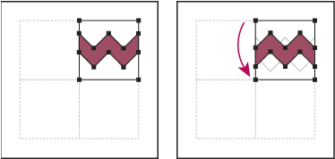

Create corner tiles for brush patterns
Corner tiles lend special border effects when applying brush patterns. You can create corner tiles from scratch, or you can use a brush pattern’s side tile as the basis for designing complementary outer and inner (reflected –135°) corner tiles.
- To create an outer corner tile, use the Rotate tool
 to
rotate the tile and its bounding box 180°. Skip this step to create
an inner corner tile.
to
rotate the tile and its bounding box 180°. Skip this step to create
an inner corner tile.

Pasted tile (left) compared to same tile rotated 180° (right)